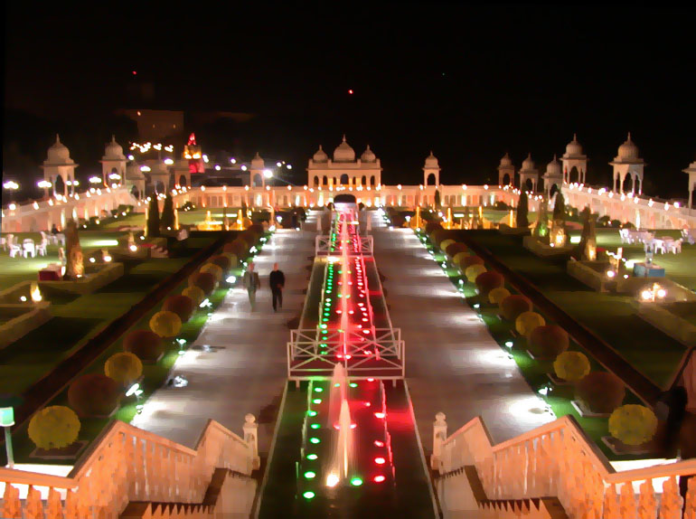
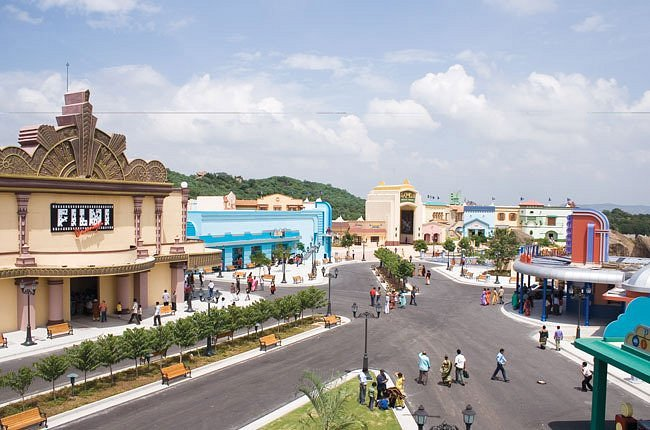

RAMOJI FILM CITY

Ramoji Film City is an integrated film studio facility located in Hyderabad, India. Spread over 1,666 acres (674 ha),[1] it is the largest film studio complex in the world[2][3][4] and as such has been certified by the Guinness World Records.
It was established by Telugu media tycoon Ramoji Rao in 1996.[6][7][1] The Guardian described Ramoji Film City as "city within a city."[2]
Ramoji Film City Entrance
It is also a thematic holiday destination and a popular tourism and recreation centre, containing natural and artificial attractions including an amusement park. Around 1.5 million tourists visit the place every year.

How to reach:

By Air
The nearest airport is in hyderabad

By Train
The nearest railways is in hyderabad

By Road
ramojifilm city, the most famous tourist destination in Hyderabad, can be used as a landmark. A bus,cab,local rickshaw can also be taken to reach the capital.